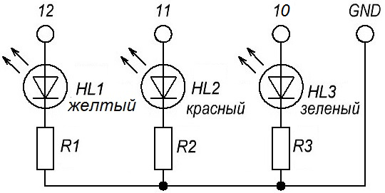
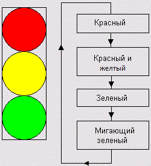
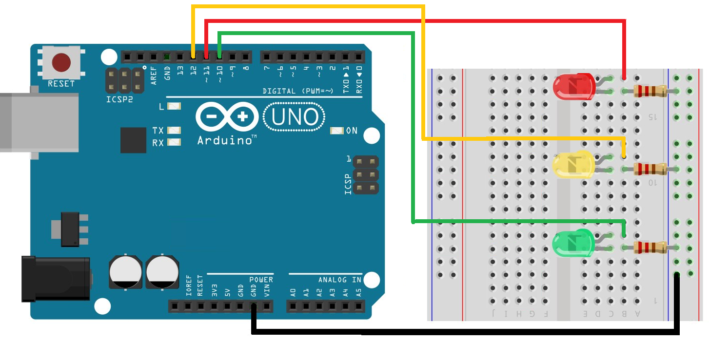

Светофор на Arduino UNO

Рис. 1 - Схема светофора
Детали для светофора
- Светодиод красный - 1 шт
- Светодиод желтый - 1 шт
- Светодиод зеленый - 1 шт
- Резистор сопротивлением 220 Ом - 3 шт
- Макетная плата - 1 шт
- ArduinoUNO - 1 шт
- Соединительные провода - 7 шт
Алгоритм работы светофора
Представим схему работы светофора в виде последовательности действий.

Рис. 2 - Алгоритм работы светофора
На рисунке 2 видно, что после одного цикла действий, они повторяются.
Сборка
При сборке схемы на макетной плате:
- устанавливаем светодиоды;
- к анодам светодиодов подключаем провода от соответствующих пинов
(зеленый к 10, желтый к 12, красный к 11); - к катодам светодиодов подключаем резисторы;
- свободные выводы резисторов подключаем к шине питания GND;
- шину питания подключаем к GND.

Рис. 3 - Схема на макетной плате
Скетч 1
void setup() {
pinMode(10,OUTPUT); //10-й вывод с зеленым светодиодом в режиме вывода
pinMode(11,OUTPUT); //11-й вывод с красным светодиодом в режиме вывода
pinMode(12, OUTPUT); //12-й вывод с желтым светодиодом в режиме вывода
void loop() {
digitalWrite(11, HIGH); //включаем красный светодиод
delay(5000); //красный светодиод светится 5 секунд
digitalWrite(12, HIGH); //вместе с красным включаем желтый
delay(1000); //ждем 1 секунду
digitalWrite(11, LOW); //выключаем красный светодиод
digitalWrite(12, LOW); //выключаем желтый светодиод
digitalWrite(10, HIGH); //включаем зеленый светодиод
delay(5000); //зеленый светодиод светится 5 секунд
digitalWrite(10, HIGH); //мигаем зеленым светодиодом
delay(800);
digitalWrite(10, LOW);
delay(800);
digitalWrite(10, HIGH);
delay(800);
digitalWrite(10, LOW);
delay(800);
digitalWrite(10, HIGH);
delay(800);
digitalWrite(10, LOW); //выключаем зеленый светодиод
digitalWrite(12, HIGH); //включаем желтый светодиод
delay(1000);
digitalWrite(12, LOW); //гасим желтый светодиод
delay(10);
}
Теперь улучшим читаемость нашего кода и сделаем его компактнее. Для лучшей читаемости, создаем макроопределения.
Скетч 2
#define GREEN 10 // Обозначим вывод 10 как зеленый #define YELLOW 1 // 12 - как желтый #define RED 11 // 11 - как красный int t_rg = 5000; // Время горения красного и зеленого int t_y = 1000; // Время горения желтого int t_blink = 500; // Время мигания зеленого void setup() { pinMode(GREEN, OUTPUT); pinMode(YELLOW, OUTPUT); pinMode(RED, OUTPUT); } void loop() { digitalWrite(RED, HIGH); delay(t_rg); digitalWrite(YELLOW, HIGH); delay(t_y); digitalWrite(RED, LOW); digitalWrite(YELLOW, LOW); digitalWrite(GREEN, HIGH); delay(t_rg); digitalWrite(GREEN, LOW); // Мигаем зеленым, используя цикл со счетчиком for(int i = 0; i < 3; i = i+1) { delay(t_blink); digitalWrite(GREEN, HIGH); delay(t_blink); digitalWrite(GREEN, LOW); } digitalWrite(YELLOW, HIGH); delay(t_y); digitalWrite(YELLOW, LOW); delay(t_y); }